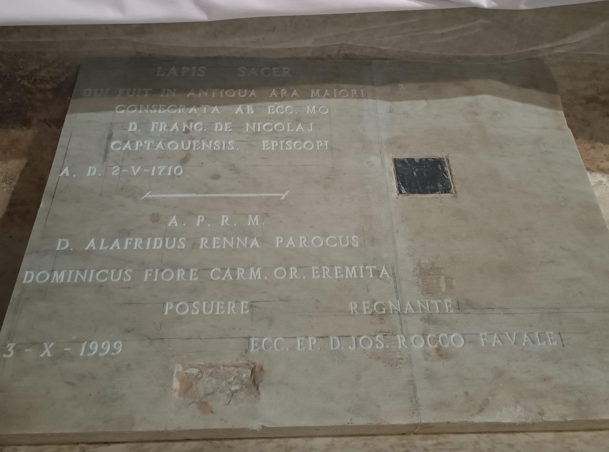
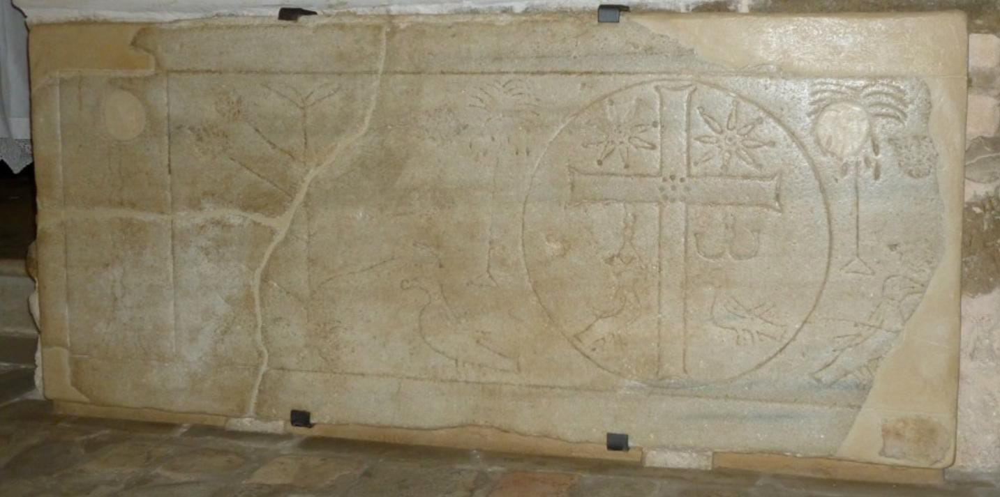
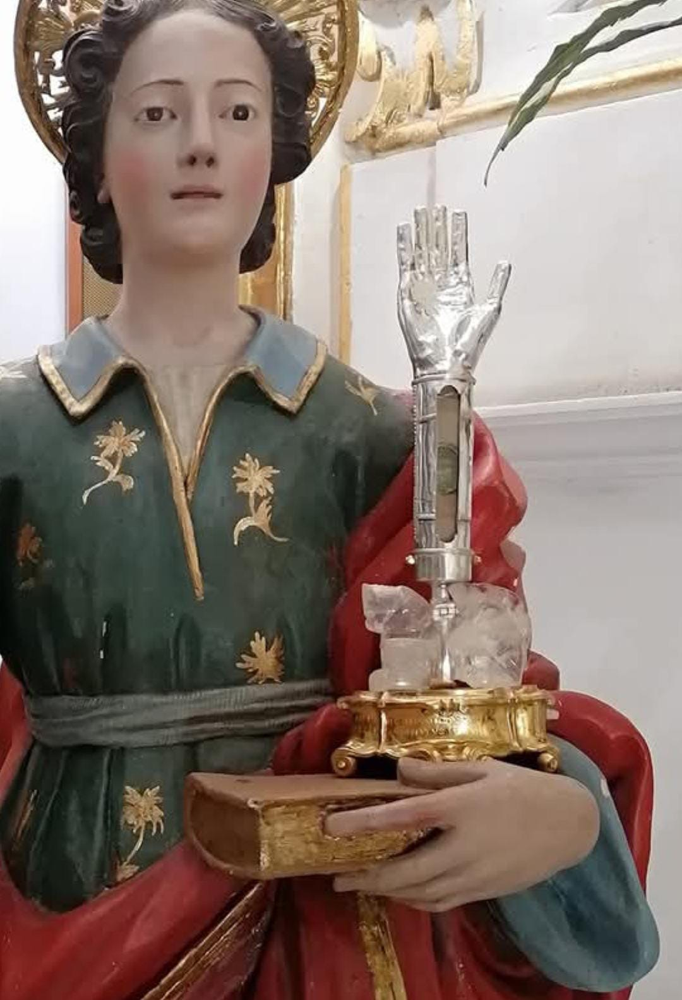

La storia di questo Altare è antica quanto la Basilica stessa.
Il basamento inferiore, costituito da blocchi di pietra viva, è parte dell’Altare originario consacrato a Santa Maria Maggiore nell’anno 967, mentre alle spalle, nel pavimento, si trova la sepoltura del Vescovo di Capaccio, Michele Barone.
La parte superiore, invece, è costituita da un’urna marmorea all’interno della quale hanno riposato le ossa dell’Apostolo San Matteo, qui custodite prima della loro traslazione nella Cattedrale di Salerno.
Oggi contiene il lapis sacer originario, la pietra sacra che raccoglie le reliquie dei santi martiri pestani, tra cui San Vito, patrono della città di Capaccio Paestum.
Ai lati dell’abside maggiore si possono notare due lapidi di marmo: quella sinistra narra della custodia delle reliquie di San Matteo Apostolo, quella destra fu posta a ricordo del restauro del 1710.
Il reperto di maggior pregio qui custodito è sicuramente il Paliotto marmoreo, una lastra proveniente dalla prima comunità cristiana di Paestum e risalente al V sec.
Originariamente copertura di una sepoltura, fu prima recuperata come materiale di risulta (inglobata in un pavimento) per la costruzione della Cattedrale di Capaccio Vecchia e successivamente riqualificata durante l’ultimo restauro della Basilica.
La decorazione è l’annuncio della risurrezione, secondo i canoni del simbolismo paleocristiano: la croce gemmata, l’alfa e l’omega e, di eccezionale rilevanza, la presenza di due piante di melagrana che, oggi, rappresentano uno degli elementi chiarificatori riguardo la continuità del culto, da quello pagano a cristiano.
Volgendo lo sguardo a terra, è possibile ammirare il pavimento originale della Basilica, in stile cosmatesco, sul quale è ancora possibile distinguere il “disco solare”, massimo simbolo paleocristiano per indicare il Salvatore.
I marmi colorati, utilizzati per la decorazione del pavimento, provengono dall’area archeologica di Paestum (abbandonata la città i Paestani riutilizzarono il materiale per edificare il loro nuovo centro).